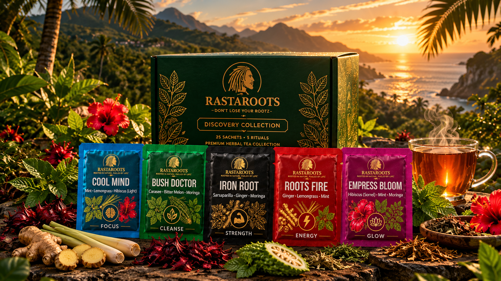

Founder Discovery Collection
Five Teas.
One Journey.
Find Your Ritual.
A 25-sachet collection of five botanical herbal infusions inspired by Caribbean heritage, traditional knowledge and the moments that shape your day.
5 Unique Herbal Blends25 Sachets In One Box8 Free Herb GuidesRooted in Caribbean Heritage